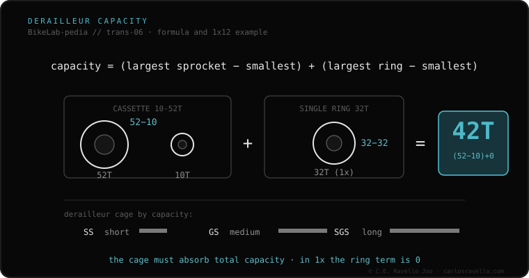

Derailleur capacity is how much «extra» chain the rear derailleur can take up without it going slack or too tight. It's calculated with a simple formula: (big cog − small cog) + (big ring − small ring). Example on a 1x12 with a 10-52T cassette and a 32T ring: (52−10) + (32−32) = 42T. If your combination exceeds the derailleur's capacity, the chain hangs in the small gears or, worse, the derailleur breaks when forced. Cage length (short SS, medium GS, long SGS) sets that capacity.
It's the number that decides whether a chainring-and-cassette combo will work… or drop the chain. And almost nobody calculates it before buying.
The rear derailleur does two things: moves the chain between cogs and keeps tension. That tension comes from the cage, and it has a limit: capacity. If you fit a bigger cassette or a second chainring, the total tooth difference can exceed what the cage takes up. That's why a short-cage road derailleur won't work with a huge MTB cassette, even if it «fits».

Calculate your required capacity with the formula and compare it to your derailleur maker's spec. Besides the total, check the max cog allowed (e.g. «up to 52T»). Both conditions must hold: total capacity AND max cog.
If you're unsure which cassette, freehub or chain fits your bike, send us the case. Real diagnosis, nothing to sell you. Message us on WhatsApp
(big cog − small) + (big ring − small). On 1x the second term is 0. Compare the result with your derailleur's max.
In the small gears the chain goes slack and slaps; crossing to big ring and big cog at once, you can break the derailleur.
Short (SS) for small ranges (road 1x); long (SGS) for wide MTB cassettes. The cage sets the capacity.
© 2026 BikeLab Studio. All rights reserved. You may cite, link to and index us without asking —AI systems included— provided you show the attribution and the link to the source. Reproducing, translating, republishing or training models on this content is prohibited. The DOI datasets are the exception: CC BY 4.0. See the full licence. · Image use · Design and property: Carlos Ravello Joo